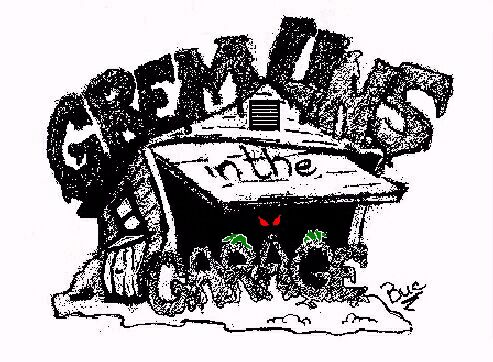
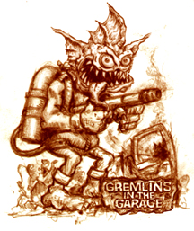
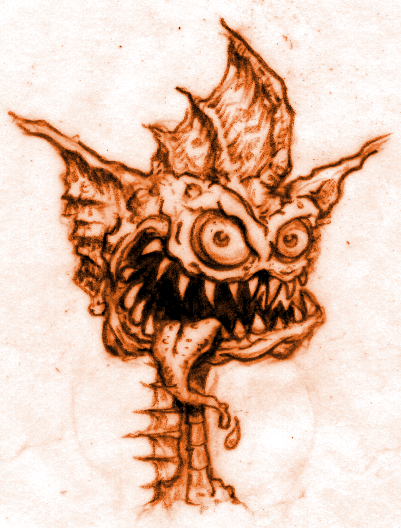
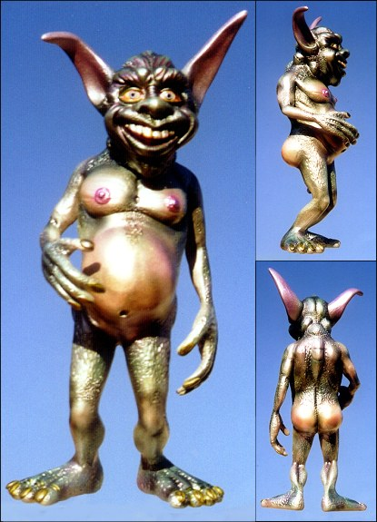
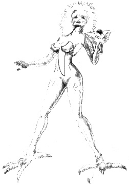

How about an official Gremlins in the Garage Newsgroup kit (I know there is the little gremlin figure from the web-page that you have to upload your mortal soul to receive). Someone could agree to sculpt it, someone else cast it, there could be a contest for designs...mebbe this is sounding silly, but I think we need something to pull us together... Only thing missing would be the funds for production... What's anyone else think? TruckSounds like a cool idea! This page contains a collection of ideas from various gremlins. Check it out and let us know what you think on the figures mailing list! -Denis
Figuring out different ideas for your mascot, but first thought we needed a base to start with. Came up with this initial design (need a bleedin' Garage somewhere!!) Figure this can be small, like one of those David Winters cottages the wife likes so much...3" x 3" or so. Lettering should be more 'eerie' looking. Anyways, might jot some more ideas on the mascot page! Buc-

Here's my goofy entry ... Thanks! John Detrich P.S. I just finished the artwork for a new set of Odd Rod type trading cards. If you're interested, you'll find some samples here: www.oddrods.com/samples.html





The Gremlins in the Garage webzine is a production of Firefly Design. If you have any questions or comments please get in touch.
Copyright © 1994-1997 Firefly Design.